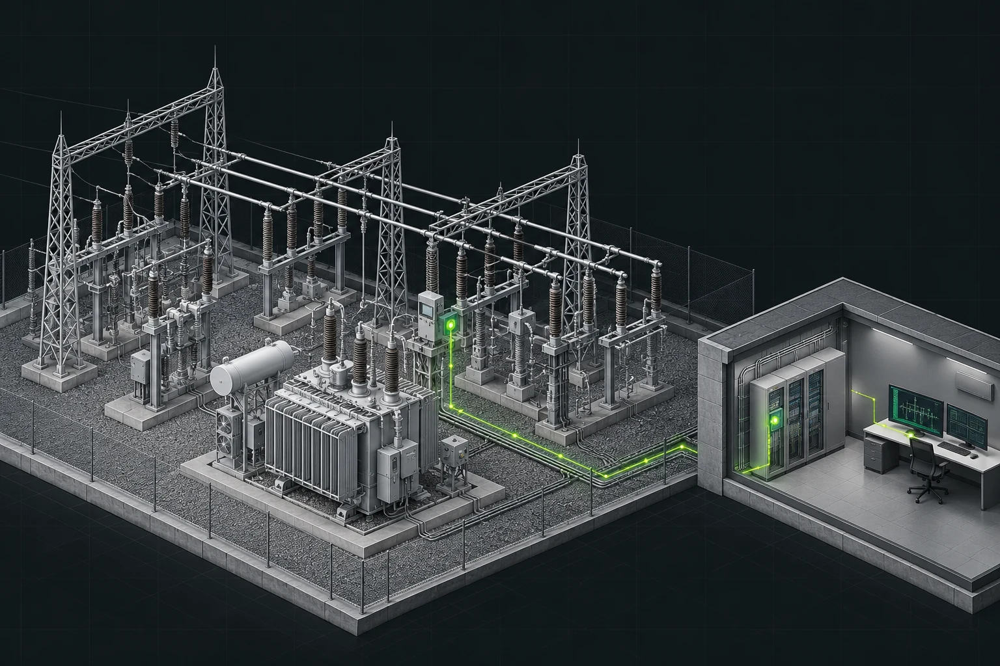

АСУ ТП
Система автоматизированного управления технологическими процессами: сбор данных, визуализация, архивирование, обмен, контроль и разрешённое управление.
Архитектура системыПоймите подстанцию как систему.
Научитесь связывать оборудование, сигналы
и проектные документы.

АСУ ТП, ССПИ и телемеханика электрических подстанций. РЗА изучаем в части интеграции; схемы защит и расчёт уставок не входят в этот курс.
Вся программа →В двух словах: мы проектируем решения, благодаря которым оборудование подстанции можно наблюдать, контролировать и, когда предусмотрено проектом, управлять им удалённо.
Система автоматизированного управления технологическими процессами: сбор данных, визуализация, архивирование, обмен, контроль и разрешённое управление.
Архитектура системыСбор и передача технологической информации между подстанцией и диспетчерскими пунктами по заданным каналам и протоколам.
ТС · ТИ · ТУПолучаем исходные данные, прорабатываем решения, оформляем ОТР/ПД/РД, формируем спецификации, таблицы сигналов и задания смежным отделам.
Результат — документыНужно понимать электротехнический объект настолько, чтобы корректно привязывать сигналы и команды к оборудованию.
Силовые трансформаторы, выключатели, разъединители, заземляющие ножи, измерительные трансформаторы, сборные шины. Оно непосредственно участвует в передаче и распределении электроэнергии.
РЗА, автоматика, оперативная блокировка, измерительные преобразователи, ССПИ, АСУ ТП, связь, электропитание. Они измеряют, защищают, контролируют и управляют оборудованием.
Маршрут зависит от проекта: данные могут поступать по дискретным цепям либо по цифровому интерфейсу, а верхний уровень может отсутствовать в локальном комплексе ССПИ.
Поступил сигнал «Выключатель В 35 Т‑1 отключён». Его источником может быть блок-контакт выключателя или устройство, контролирующее состояние аппарата. В проекте должны быть определены достоверный источник, физический/логический интерфейс, идентификатор сигнала, приёмник и назначение.
Главное различие — глубина проработки и цель документа. Названия «ТЗ», «ОТР», «ПД» и «РД» не образуют единую обязательную линейную последовательность во всех договорах.
Требования к функциям, объекту, количеству и качеству информации, каналам связи, оборудованию, надёжности, испытаниям, границам работ.
Кратко показываем архитектуру, принципы интеграции существующей системы, состав оборудования, схемы обмена, питание и размещение. ОТР — распространённый договорной этап/документ, а не обязательная стадия по ПП № 87.
Фиксируем и обосновываем проектные решения в составе и объёме, определённых законодательством, заданием и видом объекта. ПД ориентирована на согласование, экспертизу в применимых случаях и подтверждение требований.
Схемы соединений и подключений, расположение оборудования, клеммные подключения, кабельный журнал, спецификация оборудования, ведомости, рабочие чертежи.
Комплект изготовителя: размещение аппаратов, внутренний монтаж, клеммы, схемы шкафа. Состав выдачи зависит от договора, заказчика и разделения ответственности с заводом.
Проверка монтажа, сигналов и команд, каналов связи, функциональных алгоритмов, архивов, обмена с верхним уровнем и результатов испытаний.
Нужно отличать логический сигнал от физической клеммы, кабельной жилы, точки протокола и расценки ПНР. Это не одно и то же.
Дискретные состояния и события: «включено», «отключено», «авария», «ключ в местном режиме».
Одноточечные / двухточечные значенияЧисловые величины: ток, напряжение, мощность, частота, температура.
Значение, единица измерения, масштаб, качествоДиспетчерские команды: включить/отключить выключатель, изменить состояние управляемого объекта.
Права, разрешения, блокировки, подтверждениеУсловная ПС с двумя проектируемыми выключателями 35 кВ.
| Объект | Сигнал / команда | Тип | Логических точек | Источник | Приёмник | Примечание |
|---|---|---|---|---|---|---|
| В 35 Т-1 и В 35 Т-2 | Положение | ТС DP | 2 | Уточнить | Уточнить | По одному двухточечному объекту на аппарат |
| В 35 Т-1 и В 35 Т-2 | Неисправность | ТС SP | 2 | Уточнить | Уточнить | По одному одноточечному объекту на аппарат |
| В 35 Т-1 и В 35 Т-2 | Местный режим | ТС SP | 2 | Уточнить | Уточнить | По одному одноточечному объекту на аппарат |
| В 35 Т-1 и В 35 Т-2 | Токи фаз A/B/C | ТИ | 6 | Уточнить | Уточнить | Три фазных тока на аппарат |
| В 35 Т-1 и В 35 Т-2 | Отключить / включить | ТУ | 2 | Уточнить | Уточнить | По одному двухпозиционному объекту команды на аппарат |
В примере логических точек: 2 DP + 4 SP + 6 ТИ + 2 командных объекта. Это не автоматический подсчёт физических дискретных входов/выходов, адресов конкретного протокола или каналов ПНР.
Телемеханика. В типовом случае последовательный канал связи и передача ТС, ТИ, ТУ.
Телемеханика поверх TCP/IP. Часто применяется для связи ПС с диспетчерским уровнем.
Интеграция и обмен внутри ПС: MMS — клиент-серверный обмен, GOOSE — передача событий в локальной сети.
Интеграция контроллеров, измерителей и вспомогательных устройств; необходимо знать карту регистров и типы данных.
Физический интерфейс, не протокол. Требует проверки топологии линии, оконечных сопротивлений, общего потенциала и защиты.
Среда или технология связи, не прикладной протокол. Канал выбирается по требованиям объекта и доступной инфраструктуре.
Команды нельзя проектировать как «простую передачу битов». Нужно определить источник, права управления, местный/дистанционный режим, блокировки, модель команды, обратное подтверждение и порядок проверки.
Не надо заучивать сотни страниц сразу. Начните с назначения документа, области применения и разделов, непосредственно относящихся к текущей задаче.
Карточки 13 ГОСТ проверены по Росстандарту 30.10.2026. Редакции НПА/СТО и применимость к проекту уточняются отдельно. Для ГОСТ Р 21.101-2026 проверьте поправку ИУС 11-2026. Что читать и как проверять →
Законодательство и обязательные требования нельзя подменять СТО. Стандарты организации применяются с учётом их сферы действия, договора и требований заказчика. Сам по себе факт существования ГОСТ или СТО не означает обязательности каждого его положения во всех проектах.
Для специалиста с базовой электротехнической подготовкой. Программа рассчитана на изучение с наставником; в конце каждой недели требуется проверка практики.
Все примеры учебные, без использования реальных схем и сведений о действующих энергообъектах. Сначала выполните работу самостоятельно, затем откройте разбор.
Каждая попытка — 24 вопроса из банка 36; вопросы и варианты ответов перемешиваются. Один правильный ответ в каждом вопросе. Для зачёта рекомендуем 20 из 24 и успешную практическую работу. Это открытый учебный тренажёр, а не защищённый экзамен или подтверждение квалификации. Допуск к самостоятельной работе определяет наставник после проверки проекта.
Короткие объяснения встречающихся в заданиях, схемах и пояснительных записках терминов.
После 4 недель специалист готовит небольшой комплект по условному расширению ССПИ ПС 35/10 кВ: два выключателя 35 кВ и передача данных диспетчеру.
Рекомендуемый порог 80/100 при отсутствии критических ошибок: несанкционированного ТУ, неописанных интерфейсов, несогласованного питания и отсутствия источников сигналов.
Результат адаптации подтверждает наставник по реальным чертежам и ответам на замечания. Приёмка теста сама по себе не означает допуск к самостоятельному проектированию.